Mobile Malware Analysis : Tricks used in Anubis
Anubis

Anubis is my first case of complicated android malware and taught me so much about android malware. I want to share these learnings in this post. Anubis is almost one year old but its impact is much higher than older banker families and campaign is still going on. Small section of anubis downloader samples found in play store in between July 2018 and March 2019 :
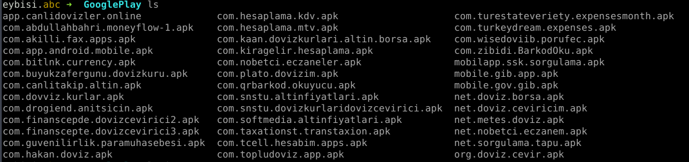
Anubis is full of tricks. List of capabilities:
- Steal information with overlay attacks from banking apps
- Ransomware
- SMS interception / Call forwarding
- RAT
- Keylogger
To spread malware generally google play store is used.
Downloaders
Anubis generally consist of two part. I’ll call them downloader and payload. If malware spreads over third party sites, such as flash updates it only downloads payload of anubis. But if malware spreads over google play store, it uses downloader. Because it needs to. If payload of anubis is used it will be detected by play protect easily. So to download payload, fake applications deployed on play store. But how an application downloads and installs another application ?
Easy, with REQUEST_INSTALL_PACKAGES permission. I think in the current state of Play Store this permission is dangerous than any other one. Because Play Protect can catch malware and rats if published on play store. Spread of malware generally comes from this permission. Users need to check if this permission is in permission list.
Social Engineering
Malware needs to lower suspicion of user after installation. Anubis downloaders use little but strong steps to make user believe it is legitimate app. Since threat actors want to catch valuable victims, generally these fake applications will be finance related apps. Such as Currency Converter.
| Curreny - Gold - Euro | Currency Center |
|---|---|
| 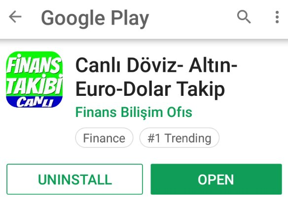 | 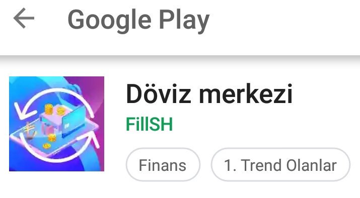 |
( notice #1 trending )
But these apps will imitate legitimate ones. Here is how earlier fake apps worked. After installing, app will remove itself from homescreen. Why ? Lets say you downloaded an app. But it didn’t worked like you wanted. What you do ? Go back to homescreen and delete that app right ? Now you need to go to settings. Also after opening fake app, generally app will prompt App needs to be updated and forward user to legitimate app that have same app icon, app name and almost same developer name. So you downloaded an app, it forwarded to real one and you installed it. When you go back to your homescreen, you will see only one app which is legitimate one. With this, suspicion of user is lowered. But when you go to settings and list application, you will see 2 of them.
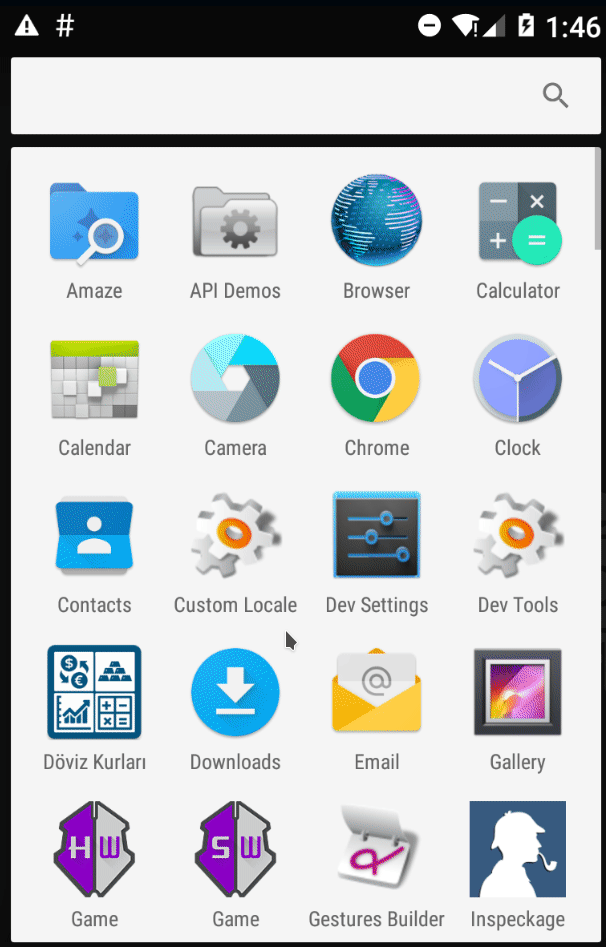
Also ! if you try to remove malware from settings an system error(!) will show up.
System Update ?
After user installs downloader, app will download second stage of attack, payload. Generally name of downloaded apk will be either Sistem Guncellemesi, Operator Guncellemesi, Flash Update, Yazilim Guncellemesi. Names are in Turkish, meaning System Update, Operator Update, Software Update. Icons of these apps:
| Flash Player Update | Update | Operator Update | Service Update | System Update |
|---|---|---|---|---|
| 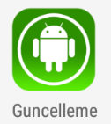 | 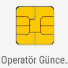 |
With these icons threat actors want user to believe these are legitimate apps. After downloader gets payload app from command and control server, prompt will shown to user. User needs to activate third-party installation and press yes to prompt screen. Then app will installed. After user opens up, app will ask for permissions then nothing will shown and app will dissepear from app list.
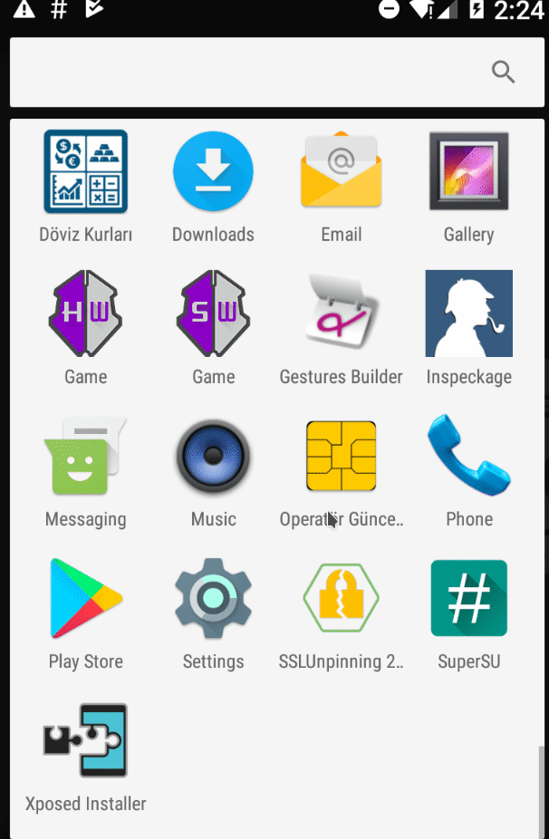
Did you see flickering after giving Accessibility permission ? We will come to that.
Persistence
In desktop malware generally malware will write itself to Startup folder to get persistence and open itself each boot. What about Android malware ? Let me introduce you to RECEIVE_BOOT_COMPLETED. With this receiver, app can open itself in background when device is booted. Cool right ?
You cant delete me !
Lets say user gave all permission to application and installed it. But you want to remove app. When you go to settings and try to delete app, you click the app icon. It says System apps cannot be deleted and you are forwarded to user to Home Screen.
What ?

App didn’t take device admin permissions. How it can do that ? Lets find out.
Accessibility
From official android page :’Accessibility Services run in the background and receive callbacks by the system when AccessibilityEvents are fired. Such events denote some state transition in the user interface, for example, the focus has changed, a button has been clicked, etc. Such a service can optionally request the capability for querying the content of the active window‘.
What can go wrong right ?
It can track user activities and have ability to query certain things such as message boxes. Each accessibility event have source component that defines which application triggered current event. There are different event types anubis use :
- TYPE_VIEW_CLICKED
- TYPE_VIEW_FOCUSED
- TYPE_VIEW_TEXT_CHANGED
- TYPE_WINDOW_STATE_CHANGED
To see what all Accessibility Event types are take a look at : AccessibilityEvent
Anubis tracks all accessibility events and checks event types. So if you open new app window state will change and event will trigger. Event type of TYPE_WINDOW_STATE_CHANGED is first check. To remove malware you probably go to Settings. Settings is also an android application called com.android.settings. Second check is if triggered event comes from com.android.settings. Then malware checks if certain strings in Event description.
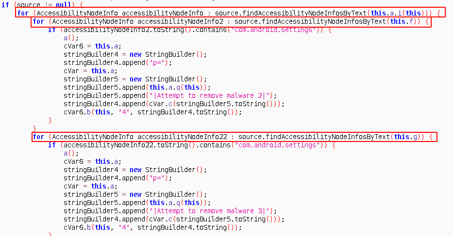
First check is for name of the app you clicked :
- Servis Guncellemesi (this.a.i(this))
Then below strings:
- uninstall (this.f)
- to remove (this.g)
If all conditions hold, an Activity is triggered a() . This activity just opens AlertDialog which says System apps cannot be deleted. Since Application doesnt have any Launchable content, android opens alert box in the Homescreen. So whenever you try to open Malware’s details in Settings you forwarded to homescreen with alert box and you can’t delete app.
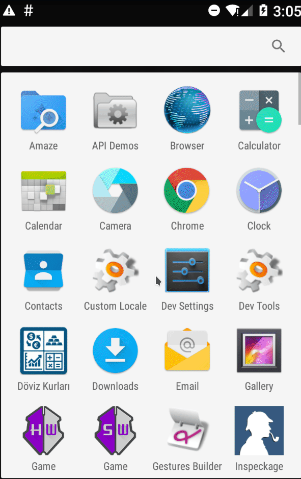
Maybe if I remove Accessibility permission from app, I should able to remove it right ? No. Lets say you removed permission. All’s fine. But when you open Settings again, malware will constantly ask you to give permission. You cant navigate to Apps section of Settings to remove app. Fine, maybe If I reboot then I can remove app ? Remember RECEIVE_BOOT_COMPLETED permission ? App will start again and ask for Accessibility permission. But you have other ways to remove the app. If you have application manager apps with package name other than com.android.settings you can delete malware. Or by booting in safe mode. Also if you have adb enabled and you know packagename you can delete it with : adb uninstall packagename. To learn package names you can list all packages with adb shell pm list packages
Keylogger
Now we covered TYPE_WINDOW_STATE_CHANGED event. Lets look at other 3 event.
- TYPE_VIEW_CLICKED
- TYPE_VIEW_FOCUSED
- TYPE_VIEW_TEXT_CHANGED
EVERY input box you click/focus and write text into it, will trigger one the three event. No matter what app you are in. So lets say TYPE_VIEW_TEXT_CHANGED event triggered and malware caught it. With just obj = accessibilityEvent.getText().toString(); it can get changed text and send back to its command and control server. Event type 16 = TYPE_VIEW_TEXT_CHANGED
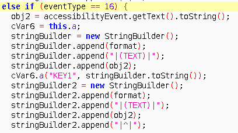
Remember flickering after giving the accessibility permission to malware ? With accessibility, app can press buttons (yes literally). Malware press yes without user interaction.
for ( node : source.findAccessibilityNodeInfosByText(this.e)) { |
You guessed right, action 16 is ACTION_CLICK and this.e holds StringYes.
Play Protect
Even though malware installed on the device from downloader without being flagged, Play Protect will constantly scan the device if its enabled and will flag anubis app as a malware. To overcome this malware tries to disable Play protect.
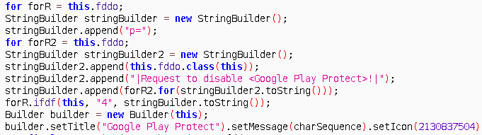
Package List
When malware installed, first thing it does is listing installed packages and sending it to command and control server. These application names are sometimes used for another purpose. For example when threat actor knows you have, lets say ‘com.x.bank’ app, threat actor sends sms that crafted for that app to lure user to open com.x.bank application. You have received 10.000$. Login in to your X account With this technique user will open that app and fake overlay will shown. This can be taught as backup plan for phishing user.
How can android app list installed packages ? Easy getInstalledApplicationspman = context.getPackageManager()
for ( ApplicationInfo appInf : pman.getInstalledApplications(128)){
if(appInf.packageName.equals("com.x.bank")){
arrayList.add("com.x.bank")
}
}
Overlay Attack
Malware authors always try to find creative ways to fool victims to get their information. Overlay attack is one of them. Since early 2016 (MazarBot ) a lot of android malware used this technique for collecting user information. When targeted apps opened, malware triggers and pulls phishing page that generated for that targeted app from command and control server and overlays over targeted app. Showing it is easier.
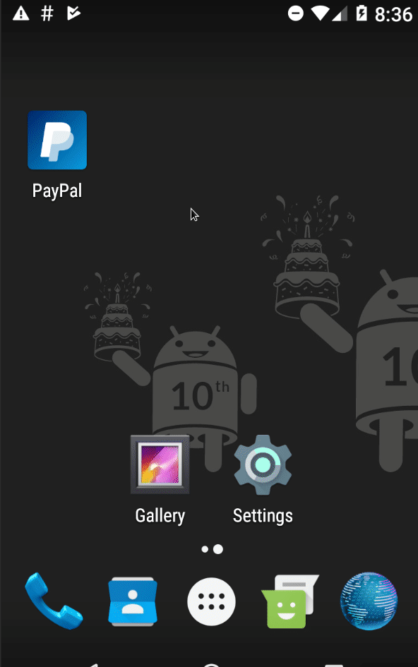
(random banking app is chosen. There are 100+ targeted apps)
Since overlayed screen is similar to original app and process of overlaying is done in very short time, user probably dont get suspicious. But how malware detects opened apps and overlays itself on top of another process ? Lets find out !
Process Scanning
Getting package list is not enough for overlay attack. Malware needs to know that user just opened “com.x.bank” app to make believable overlay scenerio. Or user wont fall it and be suspicious about it. There is no “an app opened” service in android. The way malware does is simple: somehow get running process list and get top process. Put that function in While(true){ } loop. This way you will know when new app opened. The ways of getting process list differs in targeted SDK versions. Anubis need permission to get process list if API version is greater than 23. It uses PACKAGE_USAGE_STATS permission to use UsageStatsManager and get list of running processes. If API version is < 23 then there are functions to get list of processes without any permission. I’ll focus on this topic on my next post. After getting process/package names, malware compare these with banking apps package names. Then opens up corresponding phishing page through webView. This action doesn’t need any permission. Any app can open itself without user interaction ! (Not in Android 9 YAY !)
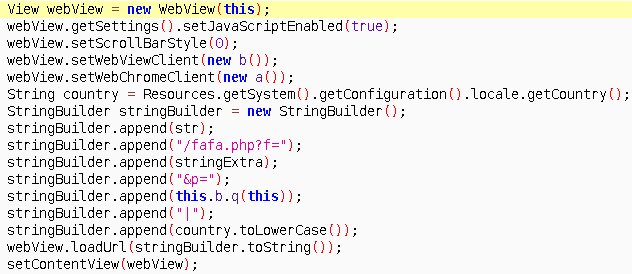
Then collected data will be send to command and control server.
Battery issues
But running in forever loop will cause some battery issues right? Battery optimizing apps will close malware. Malware author was aware of this and here comes another permission REQUEST_IGNORE_BATTERY_OPTIMIZATIONS. With this permission app will not seen in battery optimizations.
SMS Interception and Call forwarding
This is scary part. Malware already have SMS_READ permission for reading sms. Why ? For OTP codes. Addition to reading, malware requests for being default SMS app. If user accepts, threat actor behind the command and control server can delete SMS from device. Then sms will be removed and user wont have any clue.
Call forwarding, oh this is really scary. Lets say bank understood user is victim of malware. Calls him/her number. But who opens the phone ? threat actor.
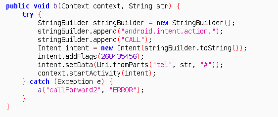
Conclusion
Two permission for two stages of anubis. REQUEST_INSTALL_PACKAGES and PACKAGE_USAGE_STATS these are releated to core components of the malware to fool user. I hope you learned something new about android malware. If you have any question feel free to ask me @0xabc0
While writing this post, Android announced 9 beta with great security related news ! Now apps can’t open itself without user interaction, no more overlay tactics for malware !
Reference
Anubis Image gregory-the-gregory
Readings
Anubis Related:
Koodous for finding anubis sample
LukasStefanko’s twitter thread
Trend Micro’s post about Anubis
IBM X-Force’s post about Anubis
Sophos Labs’ post about Anubis
If you want to read related posts about android malware heres my other posts:
How to defeat packers in Android ecosystem
How to setup android malware analysis lab (in Turkish)